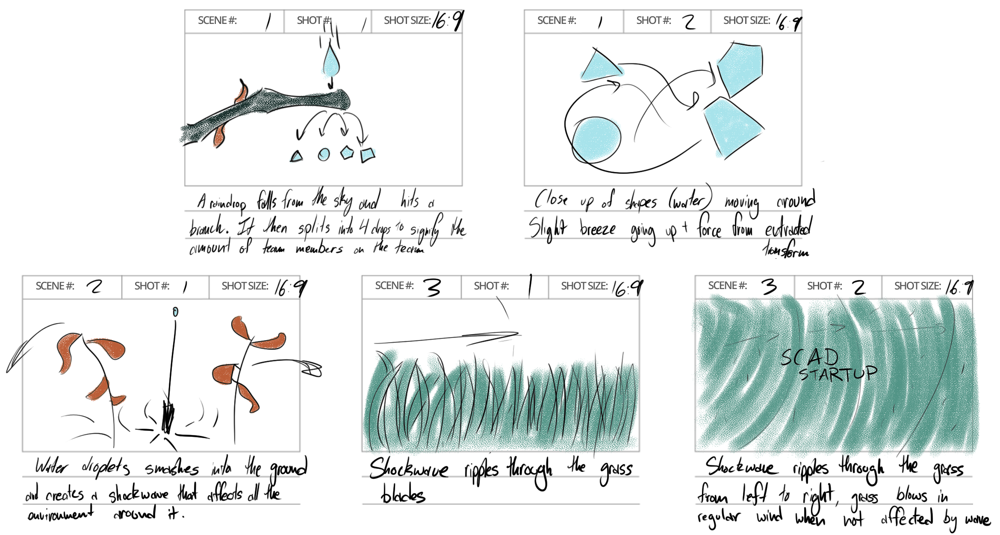

SCAD Startup Motion Media Team
Open to all students, SCAD StartUp is a dynamic, week-long, business design competition that serves as a catalyst to inspire your team to create groundbreaking ideas.
Since my first year at SCAD, Startup has helped be grow. During freshman year, I entered the competition with a group of friends. A year later, I created a Blender workshop for participants that wanted to create 3D graphics. This year, I helped attract participants to the event by creating the branding trailer.
In order to create a cohesive branding package, the visual branding group met throughout the summer to ideate. Jacob Alexander, Avery Ulanet, Amadeus Cameron, and myself refined concepts and eventually landed on
After we finalized the concept, I began to create concepts for the branding trailer. Here are the final storyboards for the trailer.
To create the visuals I envisioned, I use Houdini, Nuke, and Redshift. All of the assets were sourced from Quixel Megascans.
To create the water splash in the first shot, I used the flip tools in dops. To guide the splash into certain shapes, I used the gastargetforce dop to create a velocity field that attracted the particles to animated shapes.

In contrast with the FLIP sim, I create the debris splash procedurally. I did this so I could tune the speed and shape of the splash.

{kind=link}